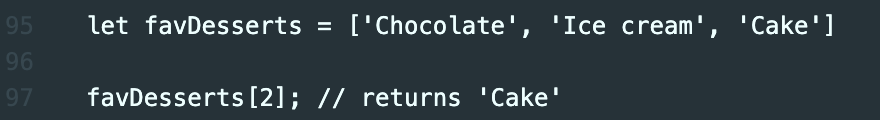

HTML and CSS
HTML is the combination of elements that give structure to the page. In contrast, CSS is the incorporation of styles that provide shape and colour to the page.
HTML can be likened to a skeleton, a body structure, and the CSS to the body's features.
Control Flow and Loops
Control flow is the order in which the computer executes statements in a script. It's like reading a book, from left to right, top to bottom.
A loop is an element that is read and executed repeatedly until the criteria are met. It's like the 24-hour loop in which our days are measured; they keep repeating infinitely. The difference is that in JavaScript, we can program the loops to stop.
The DOM
DOM stands for Document Object Model, and it's like a window or an access portal into the contents of a webpage from JavaScript. It allows us to make changes to the document structure, style, and content.
A web page is a document that can either be displayed in the browser window or its HTML source. But it's the same document in both cases. The DOM is an object-oriented representation of that same document or web page, which can be modified with a scripting language such as JavaScript.
Accessing data from Arrays and Objects
Arrays use zero-based indexing, so the first item in an array has an index of 0, the second item an index of 1, and so on. So, if we wanted to access the third item in an array, we would need to write [2] next to the variable name. For example:
In objects, properties can be accessed by using either dot or bracket notation. To get the value of the age key in a person object we could write person.age or person['age'].
JavaScript Functions
A JavaScript function enables us to define a chunk of code, give it a name and then execute it as many times as we want. They can perform tasks or calculate values.
Functions are handy because they are reusable and they can speed the workflow.